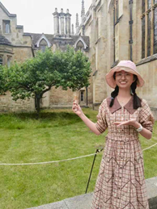
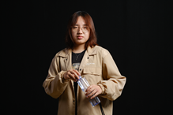
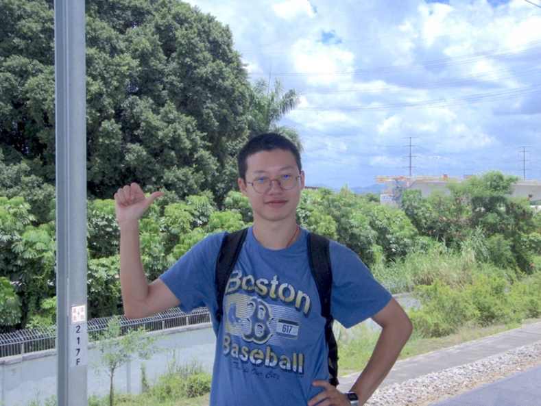
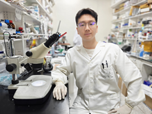

Team
HP
Qikun, Gao
I have participated in the visualization and propagation in the project.
Text summary: I am responsible for collecting and organizing research data and analysis reports of team members, ensuring that all documents are in the same format and the information is accurate. Through efficient information management, the team is provided with a clear workflow and data access system.
Official website interpretation: I formulated detailed interpretation of the iDEC competition's official website information, extracted key points and shared with the team to help team members better understand the competition background and evaluation criteria. He also asked the previous team members about relevant questions.
Bingzhe, Hu
In the IDEC competition, I contributed by engaging in preliminary project discussions, assembling the team, and reaching out to relevant teachers. I also designed the team logo and created the final presentation poster, ensuring a cohesive and impactful presentation for our project.

Beisi, Han
I was responsible for initiating early communication with professors and leading the project topic selection process. Additionally, I contributed to the refinement and organization of the team’s wiki, ensuring that the presentation of project details was cohesive and professional.
Yinan, Wang
I participated in the initial registration and team assignment process, helping to organize our group. I took responsibility for gathering information from the official IDEC website and distributed tasks to our team members. During the final construction of our team's wiki page, I was in charge of compiling the safety information and coordinating the details about our team members. This allowed us to ensure both safety compliance and clear communication within the team for the competition.
Lab

Shiwen, He
I organized and participated in the experiment, co-wrote the project report, and coordinated the wiki creation, maintaining contact with the organizing committee.

Xinyv, Lyu
I played a key role in designing, organizing, and executing the experiments. I developed the experimental strategy, determined necessary protocols, and ensured proper planning and implementation. In addition to designing the workflow, I coordinated tasks and resources to ensure efficiency. My work included conducting critical lab operations like bacterial transformations, protein extractions, and running assays. Through careful planning and hands-on execution, I helped ensure smooth experiment execution and reliable data collection to support the study's objectives.
Zilu, Wang
I was primarily involved in the work of the experimental group. During the experimental process, I was mainly responsible for constructing the corresponding plasmid proteins and, after successful construction, transforming them into competent E. coli to express the plasmid. After expression, I extracted the PVC proteins corresponding to the plasmid through ultracentrifugation. In the later stages of organization, I was mainly responsible for organizing and analyzing the results obtained from this part of the experiment (such as protein electrophoresis gel images).
Zining, Zhao
As a member of the experimental group, I participated in the wet laboratory phase of this project, mainly involved in protein purification and antibacterial experiments; I was also responsible for writing parts of the report and creating the presentation PPT.

Yansong, Ouyang
As the team leader, I took the initiative in the early stages to discuss the topic with the advisor and was responsible for liaising with the project group to expedite and enhance the experimental process. I chaired regular meetings to discuss various aspects of the competition and to ensure smooth progress. I also maintained consistent follow-ups on the experimental progress, engaging in timely communication with the advisor to facilitate the completion of the project. As a member of the experimental group, I participated in various experiments, including bacterial transformation, plasmid extraction, the separation and purification of the target protein, and so on.
Zihao, Lei
In this competition task, I was primarily responsible for the arrangement and design of the experimental tasks, as well as summarizing the results. As a member of the experimental team, I completed various experimental tasks under the guidance and supervision of laboratory professionals. These tasks included preparing culture media, extracting PVC proteins through ultracentrifugation, conducting sterilization experiments (targeting Vibrio cholerae), and preparing samples for transmission electron microscopy (TEM). In addition to these tasks, I also took charge of writing the experimental protocols and organized the entire team to complete and submit the final report.